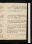
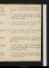
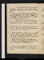

- About
- Diary
- People
- Events
- Reading
- Writing
- Meals
- Meetings
- Search

1795. Jan. 1. Th. Revise. Dine at Sutton's, w. Buller, Haskins & Morgan; talk of Xty & God: W Watts calls.
2. F.Write 1 page: revise. Tea Dyer's, w. Porson, Holcroft, Williams bard, Staley, Thelwal, Chennels & mrs Spence.
3. Sa. Revise. Dine at Northmore's, w. Walker Manchr, Wakefield, B. Hollis, Disney, Dyson & Williams b.; talk of God.Wedgwood dies.
Jan. 4. Su.Smith breakfasts: Johnson calls: dine at Tooke's, w.Cline, Wardle, Bonney, Wildman, Lee, Jacobs, J. & G. Williams & Dyson.
5. M. Call on Porson, P. J.: M. dines: sup at Reveley's, w. Jennings.
6. Tu.Revise. Read Fawcet's War. Philomaths, no-d.: sup at Fenwicks.
7. W.Write to Fawcet: dine at Walthamstow: sleep. Thaw, one day[Not in London]
8. Th.Porson calls & dines, P. J.; adv. C.: sup with Porson, at Jennings's.
9. F.Call on Inchbald: dine at Foulkes's. Greenwich.[Not in London]
10. Sa.Dine at Tooke's, P. J.: sleep .[Not in London]
Jan. 11. Su.Ht to Windham. Call of on Mackintosh, Aickin & Shield, all nah: dine at Holcroft's, w. Foulkes's & Armstrong; adv. Dyson. White calls.
12. M.Revise. Col. Barry calls: sup at Reveley's, courir dehors .
13. Tu.Revise: write 1 page. Dyson at tea, talk of the universe: call at Fenwick's: Philomaths, love.
14. W.Revise. Ht to Windham, fin.: do Narrative, p. 78. Sup at Nicholson's, talk of the universe.
15. Th.Revise. Call on Wilb. Bird, Gerrald & Foulkes: dine at Thelwal's; adv. Clarke mystic: sup at Jennings's, avec lui.. x
16. F.Write M's Preface. Ht calls: Dyson at tea: call at Fenwick's, nah.
17. Sa.Revise. Translate la Tactique: C. dines: tea Powel's, w. Ht, Thelwal, Iliff, Bailey, Walker, Manning, Hubbard, Lee, Johns, Fawcet & Dyer.
Jan. 18. Su. Revise. Smith breakfasts: dine at Holcroft's; adv. C., Thelwal & G Williams
19. M.Narrative, p. 181.Otton calls: sup at Reveley's, l'eternel.
20. Tu.Revise. Narrative, p. 215, fin. King calls: call on C. Moore, Davis & Inchbald; adv. Ht: dine at Philomaths.
21. W.Walker's Pamphlet, pp. 161: Thelwal's Poems, pp. 32: Le Mondain.
22. Th.Revise. Fawcet calls: dine at King's, w. Ht & lord Falkland: sup at Ht's, w. H. Richter.
23. F.King versus Paine: Letter to Windham, pp. 50. Dine at King's, w. Falkland & Davies{;}adv. Johnson: sup at Jennings's; adv. Griffiths & Macnamara.
24. Sa.Revise. Call on col. Barry, nah, & Inchbald: meet Webb & Ferguson: call on Foulkes: tea Reveley's, t. a t., l'imposteur.
Jan. 25. Su.Revise. Smith breakfasts: Moore & Dyer call: call on mrs Jennings: dine at Ht's, w. Foulkes's & Thelwal; adv. Ritson, Dyson & Cooper.
26. M.Revise. Dine at Thelwal's: tea Barbauld's, w. Aikin, Frend & Carr; talk of property, national education & societies. Thaw, 2 days
27. Tu.Revise. King calls: C. dines. Philomaths, men & animals.
28. W.Revise. Holcrofts calls: dine at Lauderdale's, w. dr Moore & Chas.
29. Th.Call on Davis: tea miss Hayes's: sup miss G's.
30. F.Call on Robinson, Fenwick, Gerald, Holcroft & Reveley (adv. mrs Jennings): dine at King's, w. Falkland & Johnson clerk of arr.; adv. Thelwal & Davis. (Erskine's.)
31. Sa.M. & mrs Jennings call: dine at King's, w. Falkland, Stone, Newton & Reid: tea Powel's, w. Thelwal, Bailey, Hubbard, Vincent, Hunter, G Richter, Walker, Bone, Manning & Lee.
No. VII.
Feb. 1. Su.Lauderdale, p. 36. Smith breakfasts{:}call on mrs Jennings: dine at Ht's, w. Tuthil; adv. C: tea Foulkes's, w. Parker, Paterson, Bell & Whitfield.
2. Tu.eCall on Ht, P. J.: dine at Reveley's: sup at Thelwal's; Bailey, Matthews, Bedder, Smith, G. Richter, Hinkley, Bedder, Pearce & Walker.
3. W. eCall on Ht, P. J., dr Moore, nah, Mackintosh, mrs Jardine: dine at Foulkes's, w. Paterson; adv. Ht: sup at Fenwick's; adv. Kennedy. Philomaths, animals. Parsons dies
4. Th.eCall on mrs Jennings: tea Johnson's, Kentish Town.
5. Th.Revise. Dine at King's, w. Williams, Wolcot, Taylor & Falkland; adv. dr. Stevenson. Macklin dies
6. F.Revise. Mrs Jennings calls: call on Mrs Reveley: C. dines: sup at Jennings's.
7. Sa.Call on Gerald; Lauderdale, nah; Inchbald , adv. Taylor ; & King: Dyson at tea; duty: sup w. him, Walker & Lee, at Powel's. Thaw
Feb. 8. Su.Revise. Smith breakfasts: Moore & King call: dine at Johnson's, w. Middleton: sup at Perry's, w. Calland, Wateridge & Scribe.
9. M.Revise. Dine at Reveley's: sup at Nicholson's, talk of duty.
10. Tu. Write 2 pages. Dine at King's, w. Wolcot, Falkland, Kaines, James, Rogers, Varland & mrs Wilson. Lauderdale, p. 124.
11. W.Call on Robinson, Fenwick, Taylor {;} adv. I. Reed, Ritson, King nah, & Gerald w. mrs Reveley: dine at Jennings's: call on Mackintosh. Bosville nah.
12. Th.Revise. Dyson, M & C. call: aftern Gerald's; adv. Bailey, Guy, M'Cummin, Williams, &c: sup at Fenwick's. Lauderdale, p. 180.
13. F.Write 2 pages. Lauderdale, p. 262. Call on dr Moore, nah; & King, do; adv. Hubbard & Powel: meet Bosville & Steele: dine at Kg's, w. Davis; adv. Anderson.
14. Sa.Revise. Lauderdale, p. 318, fin. Dine at Gerald's; adv. Brown: tea Powel's, w. Major, Walker, Manning, Lee, Bidwel, M & C.

Feb. 15. Su.Smith breakfasts: Durango, Kg, M & C call: meet mrs Jennings: dine at Ht's; adv. C.
16. M.Halhed, pp. 40: King on the Peace, p. 30. Dine at Reveley's.
17. Tu.King, p. 48, fin.: Belsham's Geo. III, p. 40. Frend, M & C call: dine at Foulkes's, with Parker; adv. Robinson, I B., Philomaths, marriage.
18. W.Revise. Belsham, p. 80. Fawcet dines; adv. Dyson: call on mrs Jardine.
19. Th.Revise. Belsham, p. 124. Fawcet calls: dine at King's, w. Wolcot, Hubbard & Towers; adv. Johnson.
20. F.Revise. Belsham, p. 160. C dines: call on Major: Readings, Free Mason's Hall; adv. Carr & Wolcot.
21. Sa.Call on Robinson, Porson nah, C Moore, Northmore nah, Webb & Inchbald: Dine at M's: Play, England Presde; adv. Taylor & Moore: sup at Ht's, w. Richters & Watts's.

Feb. 22. Su.Smith breakfasts: C calls: call on mrs Jennings: dine at dr Moore's, w. Ja. & Chas; adv. Bertrand: sup at Ht's, w. Dyson, C & Hazlit.
23. M. Dyson & Moore call: call on Mackintosh; adv. G Moore; & mrs Reveley nah: call on Dennis: sup at Fenwick's. Belshm, p. 224.
24. Tu.Belsham, p. 244. Call on Parr; adv. Porson & Banks; do mrs Reveley: dine at Mackintosh's, w. Parr & G Moore; adv. Cha. Stuart.
25. W. Belsham, p. 310. M., mrs Jennings, miss Aris & White call: Dyson at tea, talk of promises.
26. Th.Write 2 pages. Schiller, p. 60-84. Call on mrs Reveley: dine at King's, w. Powel; t à t. Butler: Foulkes nah: sup at Nicholson's.
27. F.Proofs, F & G. Mrs Jennings calls: M. dines: tea Frend's, w. Ht, Losh, Tweddel, Jonan Raine, Edwards, Wordsworth, Higgins, French & Dyer, //: sup at Jennings's.
28. Sa.Write 1 page. Wordsworth calls: C. dines: Play, Wheel of Fortunee: call at Jennings's: sup at Reveley's.
Mar. 1. Su.Smith breakfasts: dine at Wimbledon, w. Vaughan, Bonney, Frend & Miller,talk of gratitude: sup at Ht's, w. Shield, Smith & Thelwal. musn.
2. M. Revise. Fawcet breakfasts. Mrs Jennings & miss Aris call: call on King, nah: dine Mackintosh's, w. Porson, Perry, Gray, Lunan, Millers, A Cullen, Jack & G Moore.
3. Tu.Revise. Schiller, p. 124. Call on Foulkes, nah. Philomaths, metaphysics.
4. W.Revise. Brothers, ça & la. M. calls: dine at Reveley's{;}adv. Woodford: sup at King's; adv. Davis.
5. Th.Write 1 1/2 pages. Call on Inchbald; adv. Siddons's: dine at Gerald's, w. King, Thelwal & Powel: Thelwal's; Davis's, Hazlits & King: sup at King's. talk of Burney, Penruddock & Calista.
6. F.M. breakfasts: Northmore calls: call on B. Hollis: meet Johnson, Symonds & Ward: Dyson at tea.adv. Frend, Disney & Kent.
7. Sa.Write 1 page. C dines: tea Barbauld's; talk of Calista.
Mar. 8. Su.Smith breakfasts: Moore calls. Write to Jardine. Dine at Foulkes's, w. sir F. Rogers, Smith surgn, Young, Robinson, Parker & Hts; adv. Woods & miss Williams.
9. M.Revise. Dine at Reveley's: sup at Holcroft's.
10. Tu.Wordsworth breakfasts: call on Fenwick. Philomaths: soldier v. priest.
11. W.Revise. Call on Gerald & C Moore; Const: dine at Northmore's, w. Ht, Ledwich & Frend: tea Bosville's, w. Dealtry, Este, Webb & Baron: meet Fawcet. Virgil, XI, 224.
12. Th.Revise. Call on Gerald; adv. Macdonald, Scott, Brown, Burdongh, Walker & d'Espard junr: dine at King's, w. Carey & Stracy. Jo. G calls. Snow.
13. F.Revise. Life of Geo. Gordon, pp. 137. Call on miss Alderson nah , Inchbald & mrs Jardine: sup at Fenwick's.
14. Sa. Revise. M & Dyson call: call dine at Thelwal's: sup w. him at Fenwick's. Fourth Letter to Paine. Snow.
Mar. 15. Su.Revise. Williams on Pol Liberty, p. 80. Dine at King's, w. Wolcot; adv. mrs Con Cannon, Siveright & Stone.
16. M. Revise. Williams, p. 127, fin. M. & Toke call: dine at Reveley's: Coopers sup.
17. Tu.Write 2 pages. Call on Battie, A A; meet Iliff & Gray: dine at Bosville's, w. Lord Kinnaird, Este, Dealtry, White, Rutherford, & Ht & Webb. Virgil, 444: Williams, p. 36.
18. W.Write 3 pages. Williams, p. 56. Dyson calls. Dine at Kings' adv. Stevenson.
19. Th.Write 3 pages. Call on mrs Reveley: dine Ms: Play, Life's Vagariese: sup at Ht's. Virgil, 660.
20. F.Revise. Virgil, 915: Henry, p. 200. Call on Gerald; adv. Fenwick.
21. Sa.Revise. Virgil, 215: henry, p. 264. Fawcet calls. Play, Edwy & Elgiva, & Alexre; adv. Lawrence & mrs Calland: call on mrs Reveley.
Mar. 22. Su.Ca Smith & Thomson breakfast: call on Jennings: mr & mrs J. call: dine at King's, w. Rogers, Christie & mrs Wilson; adv. Selinas & mrs Cannon
23. M.Revise. Virgil, 324. M breakfasts: Fenwick, Hollis & mrs J. call: dine at Reveley's: Nitsch's Lecturee.
24. Tu.Revise. Henry, p. 316; II, 102. Call on Gerald: dine at Foulkes's: Philomaths, Xtn morality.
25. W.Revise. Henry, p. 143. Wordsworth, M & Fawcet call: call on Ritson: Fenwicks & miss H. Braddock dine. Virgil, 508.
26. Th.Revise. Henry, p. 165. Dine at King's, w. Brook, Newtons & Barnes; adv. Neale, talk of libels.
27. F.Write 5 pages. Live to Mend: Henry, p. 217. Dine at Gerald's, w. King, Kaines, Hubbard & Sally Martin; talk of Xty.
28. Sa.Revise. Live to Mend: Henry, p. 277. Call on Hollis nah, miss Godwin nah: sup at Adams's, w. miss Prince; adv. Newdicks, Atkins's & Hinckley.

Mar. 29. Su.Smith breakfasts: call on Bosville; adv. Robinson, mrs Beaumont & lord Dudley; & on Mackintosh: dine at Hts, w. Fenwicks; adv. C & Knt. adv. Plowden.
30. M.Henry, p. 328; III, 116. Fawcet, Dyson, B Hollis & Barbauld call; call on Bulmer; tea Barbauld's, w. Geddes, Dyer, mes Barwel, Howard, Clarke & Smith.
31. Tu.Revise. Henry, p. 3 136. Wordsworth & M call: call on Davis nah, & J Hollis nah: dine at King's, w. Lewis, Quick, Wolcot, Casey & Ht: sup at Thelwal's, w. Wadstrom, Frend, Batty, Dyer, A Alderson, & miss Hawes's.
Apr. 1. W.Henry, p. 150. Call on Moore, A Alderson, col Barry nah, Webb nah, & Gray ; dine adv. C Lameth: meet Kaines: dine at King's, w. Celinas, sir C Wray, Wolcot, Carey & mrs Grattan.
2. Th.Trial of Gilham, pp. 113: Henry, p. 310; IV; p. 32. Tea at Johnson's.
3. F. Henry, p. 248. Call on Porson nah & Davis. Dyson & J G at tea: call on Fenwick nah.
4. Sa.Revise. Henry, p. 304, fin: Romans de Voltaire, p. 40: Belsham, p. 364; II, p. 12: Paley on Contentment, pp. 22; Preface, pp. 33. C dines
Apr. 5. Su.Smith breakfasts: Moore & Htcall: call on Foulkes: dine at Hts, seul: tea Batty's, w. Biggs musn & Dyer; adv. Kirkmans.
6. M.Revise. Dine at King's, w. Felton; talk of Gilham: sup at Ht's.
7. Tu.Revise. Virgil, 724. Dine at Foulkes's, w. Aris's, Pikes, Woods, & mes Harris & Williams. Philomaths, Xtn morality.
8. W.Virgil, 952. Call on M, King, Gerald (adv. Lister & Binney), Fenwick, Newton nah & Barry: dine at Hts; adv. Hazlits: sup at J Hollis's.
9. Th.Virgil, Ecl. 1 & 2. Wordsworth breakfasts: call on sir Geo. Staunton, Batty & Jo. G ; adv. Firth.
10. F.Write 1 page. Virgil, Ecl. 3. Call on Inchbald nah, mrs Webb nah & Reveley nah: Mt Perry, Webb & Ferguson: dine at King's, w. Ht, Taylor, Buller contr, Carey & mrs Grattan
11. Sa.Virgil, Ecl. 4: H M W's Letters, p. 102: New Ann. Reg. 1793, p. 39. Call on Inchbald: Jennings calls: Dyson at tea.
Apr. 12. Su.//H M W, p. 136: New Ann. Reg., p. // 76. Smith breakfasts: call on Siddons, w. Alderson; adv. Cha K.: & mrs Jardine nah: dine at Hts: sup at Batty's, w. Ht & Barry.
13. M. Virgil, Ecl. 5 & 6: Christie, pp. 117: Rabaut, p. 78. Call on Ritson & Hubbard nah; & mrs Jennings.
14. Tu.Write 3 pages. Virgil, Ecl. 7 & 8: Rabaut, p. 136. Call on Davis. Philomaths, self love.
15. W.Write 5 pages. Virgil, Ecl. 9 & 10: Rabaut, p. 189. Dyson & White call; talk of the merit of power.
16. Th.Write 3 pages: revise. Virgil, Ecl. 1, 2, 3: Rabaud, p. 225, fin. M. & C. call: tea King's.
17. F.Revise. Virgil, Ecl. 4, 5. Ritson calls. Play; Welch Heiress & my Grandmothere.
18. Sa.Revise. Virgil, Ecl. 6, 7, 8, 9: Utopia, p. 52. R Johnson calls: C dines: Dyson at tea.
Apr. 19. Su.Write 2 pages. Virgil, Geo. I, 24; Ecl. 10. Smith breakfasts: call on Mackintosh nah: casualtye: dine at Ht's, w. Merry & A A; adv. Hazlits
20. M.M breakfasts: Fenwick calls. Secrecy, V. I & II.
21. Tu.Secrecy, Vol. III: Jo. Andrews, p. 40. M dines: sup at Anderson's, w. M, miss G, Walker & Graham.
22. W. Jo. Andrews, p. 76. Wordsworth, Hollis, col. Barry & Webb call: message B H: tea Hts, w. Shield, King, Foulkes, Parker, Shuter, Smith, Batty, Firth & A Alderson. Virgil, 85.
23. Th. Mandeville, Vol. II, p. 126-142: Gibbon on Virgil, pp. 56: Jo Andrews, p. 165. Call on Robinson, & Jennings nah: sup at Nicholson's; talk of promises & property.
24. F. Mandeville, p. 173: Jo Andrews, p. 212; Vol. II, p. 110. Call on Inchbald, Foulkes, nah, & J Hollis nah: meet Frend.
25. Sa.Call on Robinson, & T Taylor nah: dine at Gerald's, w. King & ladies. Write to M on publication.
Apr. 26. Su.Jo. Andrews, p. 134. Smith breakfasts: M Moore & Lister call: dine at King's w. Franco, Housselaer, Borman & Wolcot; adv. Davis's & Hts.
27. M.Write 3 1/2 pages. Mandeville, p. 190; Jo Andrews, p. 200, fin. Dine at Johnson's w. T Taylor.
28. Tu.Write 3 pages. Mandeville, p. 209. C calls: dine at Ht's. Philomaths, capital punishmt.
29. W.Write 1 page. Mandeville, p. 234. M & Dyson call: dine at Foulkes's, w. Parker; talk of Xty: call on mrs Jennings.
30. Th. Write 2 1/2 pages. C, J Hollis & Ht call: Dyson at tea.
May. 1. F.Revise. Virgil, 159 . Fawcet calls: dine at King's, w. Ht, Taylor, Butlers, mrs Grattan, mrs Watson & miss Edgworth.
2. Sa.Write 2 pages. Hermippus, p. 48. Call on Ritson. Play; Deserted Daughter & Irish Mimice: sup at Hts, w. Fenwick. see Robinson, Peary & Gray. Gerald for Portsmouthe.
May 3. Su.Smith breakfasts: Dyson calls: walk w. Kennedy: dine at Tooke's, w. Vaughan, J Williams, Walker, Brown, Kennedy & Hepburn.
4. M.Hermippus, ça & la. Dorel calls: Play, w. Walker; Child of Nature, Old Maid & Poor Soldiere. Catholic bill rejected in Irelande.
5. Tu.Call on King, Bosville nah , Dealtry, Webb nah, Lauderdale nah, Fergusson nah, J Hollis, Northmore & B Hollis: Exhibitione: dine at Hts: Philomaths, hair powder.
6. W.Cha. of Gerald: revise. Call on Davis, Fergusson, Gray nah, & B. Hollis: dine at King's w. Buller contr.: tea Hts, w. Kings, Foulkes's, Battys, Banks{,}Dennis, A Alderson & miss Winal. Virgil, 186.
7. Th.Revise. Call on Gray nah & Lauderdale: tea Firths, w. Ht, Thelwal, Smirke, Batty, Foulkes, Matthews & Higgins.
8. F.Write 1 page: revise. Virgil, 203. J Hollis calls: Dyson at tea.
9. Sa.Revise. Virgil, 286: Hermippus, cl. Ritson & Welby call: Fawcet dines: sup at Reveley's, w. La Murray & Banks
May 10. Su.Smith breakfasts: C & Fenwick call: call on Mackintosh (adv. de Gr[ ]) , Alderson, Jennings nah & Dr Moore: dine at Hts; adv. A Alderson, mrs Batty, Dyer, Ritson, Pinard & H Richter.
11. M. Revise. Gerald's Come; Mackintosh, Maxwel, Fergusson, Perry & Ht : call on Inchbald: dine at Foulkes's; adv. mrs Aris, miss Winall, Donovan & miss Hts.
12. Tu. Mandeville, p. 254. Breakfast at Batty's; adv. Smiths & abbé Carrier: di Exhibition w. Dysone: dine at King's: tea Smirke's, w. Batty, Foulkes & Firth.
13. W.Aickin calls: walk to Walthamstow w. Dyson; talk of matter & God: dine at Fawcet's: sup at miss Godwin's.
14. Th.Revise. Dine at J Hollis's (D L), w. Dr Lister: tea miss Hayes's, w. Frend, Dyer, Brown, Brooke, &c.; talk of God.
15. F.Write 3 pages. Virgil, 337. Call on Reveley: sup at Nicholson's. Dorel calls.
16. Sa. Write 3 pages. Virgil, 423. Dine at Lister's, w. Crisps, Cline & J Hollis; talk of property & self-love.
May 17. Su.Write 2 pages. Virgil, 514. Smith breakfasts: Reveleys call: call on Jennings, nah: dine at Hts, w. A Alderson, mrs Batty & miss Buck.
18. M. Write 3 pages. Virgil, Geo. II, 62. Dine at King's, w. mrs Grattan; tea Foulkes's.
19. Tu. Write 1 page. Virgil, 177. Dine at Foulkes's, w. Cook: call on Jennings; adv. Ferguson & Nugent: Philomaths, no-d.
20. W.Virgil, 264. Breakfast at Batty's: call on Lawrence: Gerald's come; Ht, Maxwel & Perry: tea Barbauld's, talk of crimes. Insurrection of the Jacobinse.
21. Th.Write 3 pages. Virgil, 419: Mandeville, 274. Dine at Batty's, w. Tooke, Harts, Smirke, A A & miss Buck.
22. F. Write 3 1/2 pages. Virgil, 542: Mandeville, 300. Dyson at tea; talk of design in the universe. Geo. III, 48.
23. Sa. Write 4 pages. Virgil, 208. Dine at Reveley's; adv. Banks's, Barry & Woodford.
May 24. Su. S Virgil, 336. Smith breakfasts: Mrs Moore calls: d walk to Putney; adv. Walker: dine at King's, Bowling Green: sup at Ht's, w. A A & Ritson. See Tho. Bowes.
25. M.Write 1 page. Virgil, 403. Call on Nichols, Frend, B Hollis & Foulkes, nah. Necromancer, passm.. Call on Inchbald; adv. mrs Twiss & mrs Harvey.
26. Tu.Virgil, 566: Deserted Daughter. Tea Foulkes's, adv. Campigny & Ht.
27. W.Revise. Virgil, Geo. IV, 100. Walk to Hampstead, w. A A; dine at Barbauld's, w. her & miss Howard: sup at Batty's.
28. Th.Revise. Call on Ht (sets out for Exeter): dine at Lawrence's, w. C Moore.
29. F.Revise. C dines; Dyson at tea: call on Davis.
30. Sa. Write 6 pages. Call on Hts, Inchbald, Radcliffe nah, Ritson nah, & Nicholson nah. Virgil, 148. Rheumatism, 24 hourse.
May 31. Su. Smith breakfasts: M Moore & Fenwkcall: dine at Foulkes's, w. Crowdy's, Hyder, mrs Warren & miss Thomas: call on Perry, nah.
June 1. M. Revise. Virgil, 280. Dine at King's: meet mes Wilson & Morse: call on Perry nah, & A A. meet Banks vdm.
2. Tu.Breakfasts at Lawrence's; talk of God: call w. him on Inchbald: call on Perry: dine at Reveley's; adv. Jones. Dealtry, Fenwick & Anderson call, nah.
3. W. Virgil, 365. Dine at Tooke's, w. Batty, Smirkes, A A & miss Buck: sup at Batty's.
4. Th. Write 1 page. Virgil, 566, fin: Planetes, p. 62. Tea Anderson's, w. Fenwick; talk of reason & passion. Thunder.
5. F.Virgil, Geo. I, 70: Planetes, p. 144, fin: Holy Trio. Nicholson calls, talk of the meaning of words: call on Joyce, Inchbald & Perry nah: sup at Foulkes's, w. Hovels. (adv. Gisborne )
6. Sa. Write 1 page. Sketches of Society, p. 50. Fawcet calls: call on Nicholson: dine at Lauderdale's, w. sir J Henderson & Hogg; adv. Moore; talk of P. W. & republicanism.
June 7. Su.Smith breakfasts; adv. M Moore: dine at King's, w. Butler : sup at Hts; adv. G Richter. adv. Robertson: see C Kemble. Luxemburgh takene.
8. M. Revise. Tea Reveley's, Sigismunda.
9. Tu. Write 2 pages: revise. Sketches, p. 160, fin. Call on Perry nah; Joyce, adv. Tooke & Symonds; Foulkes, miss G & Adams, nah. Young Capet diese.
10. W.Write 1 page. Virgil, 218. Foulkes's call: call on Hts, Batty, Perry, Nicholson: dine at Lauderdale's, talk of education; adv. Moore.
11. Th.Call on Bosville, nah ; J Banks , adv. Tweddel; Smirke, Aickin, Barry & Nicholson: dine at Hts, w. Thelwals & J Richter; adv. Batty, C Buck, G & E Richter, & Turners.
12. F.Rights of Man, p. 123. Thelwal's Lecturee: sup at Thelwal's, w. Richters, Warren, Ritson{,}Walker & Mannings; adv. Wadstrom.
13. Sa.Call on Robinson, Fenwick, C Moore nah &Taylor: dine at Fawcet's.
June 14. Su.Rights of Man, p. 170. Smith breakfasts; adv. J G: H Richter & Ritson call, talk of cause: sup at Nicholson's, talk of example.
15. M. Revise. Call on Inchbald: M. dines: tea Reveley's. Anderson calls, talk of pleasure.
16. Tu.Call on Robinson, C Moore, Lawrence, Northmore, Alderson nah , col Barry nah , Webb nah , Nicholson nah , Hts ; adv. Dyson & mrs Hazlit: dine at Foulkes's.
17. W.Call on Ritson, Dyer & Foulkes: tea Anderson's, w. Fenwick, talk of conviction.
18. Th.Dine at Parkinson's, w. Thelwal, Stevenson & Beaumont.
19. F.Write 4 pages. Condorcet, 56 pp. M dines: Dyson at tea, talk of sincerity & etymology.
20. Sa.Fawcet, Anderson (talk of money) & M call: dine at Reveley's: sup at Batty's, w. A A.

June 21. Su. Write 1 page. Smith & Fenwick breakfast: Dyson calls: call on Mackintosh & Jennings, nah , & on mrs Jardine: dine at Hts, w. E R: tea Johnson's, w. Johnstone's: sup at F's, w. Watley j[r?].
22. M. Mandeville, p. 345, fin. Call on Reveley & Hts: Birmingham Mercury, w. Malony & Smith of Manchester: sup at Aylesbury.[Not in London]
23. Tu.Dine at Hatton, w. lord Dormer & son, Greatheed, Eyre, Wills, Howel, Mawley, Lambes, Bradley & Howes resident.[Not in London]
24. W.Ride to Warwick, w. Howes & miss Parr; see the castle & the church. Bolingbroke's Phil. Works, p. 20: Hume, V. 6, p. 480-535.[Not in London]
25. Th.Kennelworth-book-club, dine w. Parr, Greatheed, Wills, Johnson, Pye, col Staunton, & Sayer & 2: Supper, talk of learning. Bayle, art: Spinosa.[Not in London]
26. F.Watson on a Material World, p. 67: Clarendon, Vol. III, p. 44. Miss Wilson dines, Parr at Coventry.[Not in London]
27. Sa. Watson, p. 108, fin: Bol. to Windham, p. 30. Dine at Dormer's, w. Parr, Howes, Wills, Knights, Battersby's & la. Eliz.: Parry arrives, at supper, talk of uni. monarchy & republicanism. Prorogatione.[Not in London]
June 28. Su.Berkeley on Hum. Knowledge, p. 34: Bol, p. 78: Life of Warburton, p. 70. Walk w. S P: Knight calls: Howes departs.[Not in London]
29. M. Life, p. 150, fin. Dine at Howel's, Warwick, w. Lambe, Kendal, Parr, Toms & Dwarrice.[Not in London]
30. Tu.Bol, p. 120, fin. West at tea. Letter from Robinson.
July 1. W.Berkeley, p. 120: Dissertation on Parties, p. 46. Dine at Wills's, w. Parr, Greatheed, Mawley & Parry; talk of Mackintosh. Letter from M Ry.[Not in London]
2. Th.Bol, p. 56. Dine at Lambe, w. Parr, Howel & Smith.[Not in London]
3. F.Berkeley, p. 214: Middleton's Misc, p. 109: Mistake. Talk of White.[Not in London]
4. Sa.Berkeley, p. 288: Middleton, p. 147. Dine at Mawley's, w. Parr, Wills, Eyre, Harding, Parry & miss Smiths; altercatione: meet Williams. Talk of admonition, Parry.[Not in London]
July 5. Su. Berkeley, p. 355, fin: Gesner's Isagoge, Pref, pp. 18. Arraigns P J.e[Not in London]
6. M. Hume on Hum. Nature, p. 76. Dine at Greatheed's, w. Parr, Williams's, Wills, Mawley, Parry, R G & S Parr.[Not in London]
7. Tu.Hume, p. 99. Criticism of P J. Conversation, S P. e[Not in London]
8. W.Hume, p. 167: Burke, Pt V, pp. 32: Bol, p. 70 (fin. Lett. 3). Criticism continuede . Birmingham Mercury, 11 o'clock.[Not in London]
9. Th. Breakfast at Buckingham: dine at Watford: tea Fawcet's, Hedge Grove, sleep: see Wilson, Smith, &c.[Not in London]
10. F.Dine at Fawcet's: tea w. him at Edgware: sleep at Somers Town.[Not in London]
11. Sa.Dumouriez on France, p. 60. Allen & Fenwicks call: call on mrs Williams & Hts: M dines. M R
July 12. Su.Demouriez, p. 94, fin. Call on Barnes, Mackintosh nah, Foulkes nah , mrs Brown, & Inchbald: sup at Nicholson's, talk of property.
13. M.Condorcet, p. 15. Call on Davis: sup at Batty's.
14. Tu. Condorcet, p. 79. Call on Wordsworth.
15. W. Condorcet, p. 90. Sup at Batty's, w. A A: call on Foulkes nah & Inchbald. Dyson & W call.
16. Th.Hume, p. 208: Condorcet, p. 120: All's Well, act 1. Call on Hts, & Smirke nah .
17. F.Write 9 pages. Virgil, Geo. I, 230: Hume, p. 230: All's Well, act 2. Dine at Foulkes's, w. Watley junr & Beens: tea A A, w. John Walker & capt Hamilton; adv. Dyer.
18. Sa. Revise. Virgil, 423: All's Well, act 3, 4, 5; Taming the Shrew, act 1, 2, 3: Moore on the Fr. Revolution, p. 52. Dine at Montagu's, talk of general rules & self love. Jo G calls.
July 19. Su. Virgil, 514: Moore, p. 369. J G & Fenwick call: meet Perry & Moore; talk of H M W: call on Perry nah: sup at Hts, w. H Richter.
20. M.Moore, p. 449; Vol. II, p. 425. Dyson at tea. Taming the Shrew, acts 4 & 5. G Anderson calls.
21. Tu. Moore, p. 505, fin: La Cite Roland, p. 131. Call on Bonney, Ritson, & Foulkes nah: Jennings's, Fergusson, Barry & miss Winal call; altercatione. M & Smith breakfast. Quiberon reducede
22. W. Write 1 1/2 pages. Ce Roland, p. 205, fin. Call on Hts, & A A nah: Knock at Lawrence's. Miss G. calls. Peace with Spaine
23. Th. Write 2 pages. Ce Roland, iterum. Call on Barry: sup at miss G's, w. Dyson, Lang, mrs Sherwood & M A Steele.
24. F.Sorcerer, pp. 210: Barlow to the Piedmontese, pp. 48; Advice, pp Ch. V, pp. 64. Meet Mackintosh: call on R Johnson nah.
25. Sa.Write 3 1/2 pages. Condorcet, p. 200. Dyson calls: sup at Nicholson's, talk of retailers.
July 26. Su.Condorcet, p. 232. M Moore calls: walk to Wimbledon, w. Dyson: meet Batty & Foulkes's: dine at H Tooke's, w. mrs Harvey & fils; see Graaf.
27. M.Revise. Condorcet, p. 326, fin. Tea Reveley's: call on Hts; adv. mrs Foulkes.
28. Tu.Lettres sur les Animaux, p. 76. Call on Inchbald nah: Lawrence & Dyson at tea: call on A A.
29. W.Hume, p. 344: Animaux, p. 146, fin. Call on Wordsworth & Foulkes, nah: tea Batty's.
30. Th.Hume, p. 475. Dine at King's, w. Gadagne's, Anderson, miss Barrale, &c.
31. F.Hume, iterum, p. 52: Candide, p. 100. Ritson calls: call on Hts; adv. Cole: tea Newton's, w. general Hull & Lovel, talk of Robespierre.
Aug. 1. Sa.Revise. Louvet's Narrative, pp. 239.
Aug. 2. Su. Revise. Candide, p. 157, fin. Sup at Foulkes's.
3. M.Write 2 pages; revise. Hume, p. 75: Paine's First Principles, pp. 39; Goudman, pp. 34. Meet Barry.
4. Tu. Write 3 pages: revise. Hume, p. 99: Contes de Voltaire, pp. 75. Dyson at tea.
5. W. Write 9 pages: revise. Voltaire, pp. 34: miss Williams, p. 112. Sup w. Batty: call on Foulkes nh.
6. Th.Write 7 pages. H M W, p. 291; Vol. II, p. // 231, fin.
7. F.Princesse de Babylone, p. 69: Call on Robinson, Fenwick, Lister, Gray & Inchbald: mes Ht & Richter call: sup at Foulkes's, w. Watley jr, & Cooke.
8. Sa.Write 2 pages: revise. P de B, p. 118, fin. Newton & Barnes call. sup at Hts, w. H Richter.
Aug. 9. Su.Write 2 pages: revise. Taureau Blanc, pp. 60: Berenice, acts 1 & 2. M Moore calls. Call on Mackintosh, nah.
10. M. Write 3 pages. Dumouriez, p. 108. J G breakfasts: meet Lawrence: dine at King's, w. Gadagne's.
11. Tu. Dumouriez, p. 170. Call on Robinson, Porson nah , Wolcot nah , Radcliffe nah , A A nah, &A Ht: Dyson at tea.
12. W.Dumouriez, p. 396. Allen calls. Call on Newton, nah.
13. Th.Hume, p. 124: Dumouriez, p. 444; Vol. II, p. 62. Dyson & White call.
14. F.Revise. Hume: Dumouriez, p. 200. Call on Fenwick: sup w. him at miss G's.
15. Sa.Revise. Hume. Dine at King's, w. Wolcot, & mes Gardners, & Brown; retorte.Wordsworth & Matthews call, nah.
Aug. 16. Su. Write 3 1/2 pages. Dumouriez, p. 248. Smith breakfasts: sup at Perry's, w. sir Rob Barclay, col. Mackenzie & Donaldson.
17. M.Write 2 1/2 pages: revise. Hume: Dumouriez, p. 296. Dine at Hts, w. Porson, H & G Richter, A A & mrs Lunan.
18. Tu.Medite. Hume, p. 131: Dumouriez, p. 368; Vol. III, p. 68. Call on Wordsworth nah: sup chez A A.
19. W. Write 2 pages; mal du têtee. Dumouriez, p. 106. Call on Inchbald; adv C M: Hinckley calls: Dyson at tea: sup at Nicholson's, talk of passions.
20. Th. Write 3 pages; mal du têtee. Butler's Sermons, p. 42: Dumouriez, p. 145. Dine at King's; adv. Davis's.
21. F.Write 3 pages. Dumouriez, p. 220. Sup at M's.
22. Sa. Write 2 1/2 pages. Dumouriez, p. 288. Call on M R, & Newton nah : sup at Foulkes's, w. Cooke.
Aug. 23. Su. Write 1 page: revise. Dumouriez, p. 346. Smith breakfasts: dine at Foulkes's, w. Smeatham's.
24. M. Revise. Dumouriez, p. 389. Dine at Hayes's: J G at tea, from Norfolk.
25. Tu. Write 2 pages. Dumouriez, Vol. IV, p. 120. Dyson at tea.
26. W.Revise. Dumouriez, p. 270.
27. Th.Revise. Dumouriez, p. 399, fin. Call on Ritson, & R Johnson nah .
28. F. Write 4 pages. Ce Roland, Part II, p. 56. Call on Adams nah; sup at miss G's.
29. Sa.Medite. Ce Roland, p. 66. Meet Bosville & J Richter: sup at Foulkes's, w. Hutchinson.
Aug. 30. Su.Smith breakfasts: dine at H. Tooke's, w. Perrys, Vaughans & Philip Warner.
31. M. Notices. Ce Roland, p. 106; Part III, p. 66. Call on King, nah.
Sep. 1. Tu.Memoirs, 3 1/2 pages. Ce Roland, p. 78. Dyson breakfasts. Philomaths.
2. W. Write 2 pages: Memoirs, 4 1/2 pages. Ce Roland, p. 116: Part IV, p. 20. Call on Batty, nah.
3. Th.Write 5 pages. Ce Roland, p. 35. Dine at King's, w. Gadagne's, Wolcot, Lewis, Rogers & Kendillon.
4. F. Write 3 1/2 pages. Ce Roland, p. 48. Play, the Three & the Deuce, & the Agreeable Surprisee, w. T. C.
5. Sa. Write 4 pages. N A R 1794, p. 16. Call on Davis: Dyson at tea; meet White.

Sep. 6. Su. Write 2 1/2 pages. Smith breakfasts: M Moore calls: meet Porson & C Moore: dine at Hts, w. Thelwal; adv. J & E Richters, P. Foulkes, Cooper & Pinard.
7. M.Riouffe, pp. 80. C's Rehearsale: sup at Foulkes's, w. Cook; adv. Hutchinson.
8. Tu.Write 1 page. N A R, p. 42. Fawcet dines. Philomaths, miser v. prodigal.
9. W. Write 1/2 page. N A R, p. 78, fin: Louvet, p. 100. Call on Barry & A H.
10. Th.Revise. Louvet, p. 136. Call on Inchbald: dine at King's.
11. F.Conflict, acts 1, 2, 3: Louvet, p. 200: Cooper, p. 4[8?]. Stephen calls: call on Davis.
12. Sa. Write 2 pages. Cooper, p. 72: Louvet, p. 218. Call on Robinson & Davis: Dyson at tea.
Sep. 13. Su.Louvet, p. 248. Smith breakfasts: T & E Cooper call: sup at Nicholson's, talk of miser.
14. M.Revise, P M.: Primitive Wife: Louvet, p. 260: Letter to P. of W, pp. 82. Call on Inchbald & Hts: Fenwick calls.
15. Tu. Revise: Prim Wife, acts 1, 2, 3. Call on Fenwick: Philomaths, means of reform.
16. W. Revise. Prim Wife, acts 4 & 5: Louvet, p. 294, fin. Dine at King's, w. Gadagne's & Cary.
17. Th. Revise. Prim Wife, acts 1, 2, 3. Holcroft calls (from Exeter): call on Foulkes & Batty, nah: call on Davis.
18. F.Write 1 1/2 pages. Ce Roland, p. 36. Stephen calls: call on Inchbald: sup at miss G's, w. G Anderson: J G at tea.
19. Sa.Revise. Ce Roland, p. 62. Fenwick calls: tea miss Mansel's: Play, Isabella & the Prizee, w. C. Meet Lawrence.
Sep. 20. Su.Write 1 1/2 pages. M Moore & Barton call: dine at Hts, w. Porson, Perry, Gray, Lunan, Booths, Sharp & C; adv. Pinard. Conflict, act 4: Burke's Reflections, p. 34.
21. M. Conflict, act 5: Oronooko, & Isabella: Berenice, acts 1 & 2: Burke, p. 48: Ce Roland, p. 80. Dine at King's; adv. Dyne & Housselaer.
22. Tu.Write 1 page. Parr v. Coombe, p. 30. Stephen calls: C dines: Philomaths, self love. Write to Wedgwood. Miss G & G A call nah.
23. W. Write to Parr. Parr v C, p. 73, fin: Midsummer's Dream. Dine at King's, w. Dudley, Bellamys, Kendillon & Sinclair. Dyson calls par appointement, nah.
24. Th.Write 4 pages. Fenwick dines.
25. F.Revise. Berenice, act 3: Merchant of Venice, act 1. C & miss Mansel call: sup at Foulkes's: call on M R, nah.
26. Sa.Revise. Mt of Venice, fin: Much Ado, act 1 & 2. Tea miss Mansel's, w. Gourbillon; adv. Cooper B.
Sep. 27. Su.Write 1 1/2 pages: revise. Smith breakfasts: M Moore & Ritson call: dine at Ht's: adv. Shield, Ritson, Pinard & C .
28. M.Revise. Much Ado, act 3. Call on Davis: sup at mrs Johnston's, w. miss G; Young & Campbel: meet Fenwick.
29. Tu.Revise. Fenwick calls: dine at Foulkes's, w. Harveys, Barnard & miss Virgil, Hutchinson
30. W.Revise. Burke, p. 66: Much Ado, acts 4 & 5. Tea miss Godwin's, w. Anderson & sons: call on Dyson.
Oct. 1. Th.Revise; Finish. Dyson at tea.
2. F. Revise C W. Call on miss Mansel: tea Montagu's, w. Cooke & Martineau.
3. Sa.Revise. Tribune, ça & la.
Oct. 4. Su.Revise. Burke, p. 78. Smith breakfasts: dine at Hts, w. Tuthil; adv. Pinard & C.
5. M. Revise. Love's Labour Lost. Fenwick calls.
6. Tu.Call on Robinson (propose Pol Commentary)e, Lawrence & Ht: Fawcet dines; adv. C: Philomaths, Church & State.
7. W. Revise. Hamlet, act 1, 2, 3. Call on Ritson, Davis & Inchbald ; adv. C Moore.
8. Th.Revise. C dines: Play, w. Thelwal; Road to Ruine; see Batty, Luttrel & Hubbard: sup at Thelwal's; adv. Jones T Ckd. Kippis dies
9. F.Revise. Hamlet, acts 4 & 5: Cymbeline, act 1. Tea miss Mansel's, w. Ht; adv. Luttrel: Montagu calls. Write to mrs Radcliffe.
10. Sa.Revise. Gregory's Imp History, p. 162. Play, First Love & the Village Lawyere.
Oct. 11. Su.Sit to Lawrence; adv. Ht: walk w. Ht & Perry; adv. Sheridan & Richardson: dine at Ht's, w. Shields, miss Mansel, Major, Leftley & Tuthil; adv. Bishop, & Jay.
12. M. Gregory, p. 228. Call on mrs Shield na, & miss Hayes: dine at Robinson's, w. Ht, Shield, Heath & Chalmers; see dr Moore.
13. Tu.Sieyes, pp. 62: Garat, p. 72: Gregory, p. 306. Philomaths, uni. suffrage.
14. W.Call on Wedgwood, dr Moore nah, Heath w. Ht, Knight nah, Inchbald & Mansel: see Banks vdm; dine at Montagu's; adv. Galway.
15. Th.P. J., p. 189. Call on M R: tea Thelwal's; adv. Capel & Wilson.
16. F.P. J., p. 342: Garat, p. 92. Dine at Tuthil's, w. Ht: meet King: call on Batty nah: sup at Nicholson's. Wedgwood calls.
17. Sa.Call on Robinson na, Taylor & Ritson: Johnson & Knight call: Dyson at tea, adv. Fenwick. P. J., p. 367.
Oct. 18. Su.P. J., p. 464. Wedgwood calls: call on Knight, adv. Brown: dine at Hts, w. Porson, Tuthil & E Mansel; adv. Ritson, H Richter, Sharp, C & Jones.
19. M. P. J., Vol. II, p. 120. Fawcet dines: Play, Hamlet & Ghost;eadv. dr Moore, & Batty & Housselaer: sup at Cooper's, w. Wilcocke's, &c.
20. Tu.Sit // to Lawrence, talk of Cassius: call on Inchbald & Cooper: Fenwick & E Cooper dine: Play, Dependent, w. Inchbald & Marlow; adv. Ht, & Taylor, & Kinge.
21. W. P. J., p. 160. Otton & Fenwick call: dine at King's, w. Gadagne's, H Moore, Merry & Macdonald; adv. Butler & dog.
22. Th. P. J., p. 314. Dyson calls: sup at miss G's.
23. F.P. J., p. 461. Call on Robinson, Lister nah; Taylor, Hayes, & Porson nah.
24. Sa.Sit to Lawrence, talk of Shakespear & equality: dine at Ht's, w. Tuthil, adv. C: sup at Foulkes's, w. Sammes.
Oct. 25. Su.Smith & Younger breakfast: M calls: sit to Lawrence, adv. Ht & Wedgwood: dine at Ht's, w. Merry, Mansel & Tuthil; adv. Dyson & Ritson.
26. M.P. J., p. 528. C calls: sit to Kearsley: Play, Hamlet & Shipwreck, w. Dyson; adv. Perry & Boadene; see Romney: sup at C's.
27. Tu. Revise. Garat, p. 124. Kearsley & Davidson call: call on mrs Jo G: Philomaths, free will.
28. W.Revise. Sit to Kearsley, adv. Ht: dine at Montagu's, w. Luttrel.
29. Th.Revise. Garat, p. 174. Fenwick calls: tea Barbauld's w. Belsham, Carr, Shiel, Notcut & Aikin jr; talk of self-delusion & gen principles: call on Ritson. Parliament meetse.
30. F.Revise. Garat, p. 196. M breakfasts: dine at King's, w. A B.
Nov. 1. Su.Gregory, p. 362. Smith & Fell breakfast: Dyson & Wedgwood call: dine at B P, w. Foulkes: sup at Ht's.
2. M.Gregory, p. 518; Vol. II, p. 165. Tea at Johnson's, w. Courtenays, baron d'Ahlberg, una [H?], miss Boswel, mrs Smith Sharpe, &c.
3. Tu. Gregory, p. 266: Moore's Journal, p. 324. Call on Robinson & Ht: meet Merry: Philomaths, property.
4. W. Hume, p. 125-155: Moore, p. 392. Barker calls: meet Carr: dine at Ht's, w. Merry, col. Barry, Tuthil & C. Proclamatione
5. Th.Revise. Hume, p. 189: Mackintosh, p. 58: Moore, p. 502; Vol. II, p. 233. Call on Davis.
6. F.Call on Robinson, Lawrence, Moore, Inchbald ; adv. mrs Philips: dine at M's: tea Carr's, w. Carlisle, Shee, Nugent & Sloper; talk of the intention of nature: meet Perry & Crosdil. Grenville's Bille.
7. Sa. Age of Reason, Part II, p. 22: Tour to Weymouth: Moore, p. 380. Play, Speculatione.

Nov. 8. Su. Moore, p. 420. Smith breakfasts: dine at Tooke's, w. Joyce, Frost, Tweddel jr & Dyson. Lister & Allen call, nah. miss Hayes, do.
9. M. Revise. Smith breakfasts: M, Dyson & Fenwick call: call on Ritson, & Lawrence, w. C, nah: meet J Hollis: dine at King's, w. Robinson, Este, Williamson & M'donald; adv. Davis, Housselaer & Fenw. sup at Nicholson's.
10. Tu.Hume's Eliz, pp. 20: Moore, p. 490. Montagu, Wrangham, Fenwick, Otton & M call: tea miss Hayes's, w. Hills, &c: Philomaths, free will.
11. W.Call on Robinson, Lawrence w C, Perry, adv. Porson & Robinsons, Inchbald do, Ht, Barry & Montagu adv. Wrangham: meet Knight: dine at J Hollis's, w. Lewis & yg Anthonies; adv. Barry.
12. Th. Revise. Moore, p. 556. Fawcet calls: Dyson at tea, talk of revenge.
13. F.Revise. Hume, p. 229: Moore, p. 616, fin. sup at Batty's; adv. Smirke.
14. Sa.Revise. Hume, p. 272. Dine at King's, w. Este, Macdonald, Franco & C.
Nov. 16. // Su. eRevise. Hume, p. 314. M Moore, Carr & Allen call: dine at Ht's, w. T & M; adv. Dyson & C: sup at Carr's, w. Carlisle.
16. M. Write Considerations, 10 pages. Read Hilaire. Holcroft calls.
18. W.Write 16 pages; press. Dine at Montagu's, w. Hanger, Speed, Wrangham, Raby & Jo. Raine.
19. Th. Write 24 pages. Dyson & White call; call on Jno Robinson.
20. F.Tea Carr's, w. Losh's, Robinson, Carlisle, Bromley & Stebbing. Call on Robinson, Perry & Debrett; see Hall sec. J Hollis calls .
21. Sa.Call on Davison, Johnson, Robinson, Lister nah, mrs Inchbald, Ht nah, Nicholson nah, Foulkes nah, & Ritson , adv. D Macpherson. Dine at King's, w. Este, Macdonald, Carey, O & A B. Publish Consns.
Nov. 22. Su. Write Petitione. Dine at Hts, w. col. Barry & Tuthil; adv. Ritson & Leftley.
23. M.Fawcet calls. House of Commons, w. Cary, adv. Mackintosh, Macdonnel, O' Brien, C Moore, Boaden & Armstrong. Call on Montagu, adv. Butler, & Perry, adv. Bell.
24. Tu. Revise. Age of Reason, p. 82. Lister & J Hollis call. Philomaths, ballot.
25. W.Revise. Call on miss Hayes: dine at Jno Hollis's, w. Lister, Lewis & J Anthony; talk of seditious assemblies.
26. Th.Revise. Fenwick, Bankes, Barker & Jn G call: dine at King's, w. Wolcot; adv. Davis. Publication of 8vo P. J.
27. F.Revise. Dine at C & A, w. Tooke, Goodbehe, Cooper, Bonney, Wardle, Williams's, Miller, Rukin, Savage, Lewis & [3.?]Hume, p. 327.
28. Sa.Revise. Letter from Thelwal. Call on Fenwick & Montagu: Fenwick & M. sup. Age of Reason, p. 107, fin.
Nov. 29. Su.Fell breakfasts: M, C, Dyson, J & Jn Godwin call: dine at Bankes's, w. Porson, & Jo Raine; talk of Yorke's sentence; adv. Fenwick.
30. M. Revise: finish C W. Play, Macbethe: sup at miss Jones's, w. C, M, miss G, Breach's & miss Davis. see Fenwick, King, Perry & Merrys. T Wedgwood & bro call.
Dec. 1. Tu. Read Dunstan: write 10 vsC dines: Philomaths, ballot: sup at miss G's, w. A & G Anderson, M, C, mrs Nichols & miss Jones's.
2. W. Write 10 vs Call on Reveley nah: dine at M's, w. C: tea miss Hayes's, w. Ht & Brown; talk of causes, &c: sup at Foulkes's.
3. Th.Write 20 vs. Dyson calls: call on Lawrence nah: dine at King's, w. Opie, Wolcot, A B, C, Franco's, Housselaer & Gordon & miss Bannal; adv. mrs Wilson. Hume, p. 336.
4. F. Write to Parr. Call on Shee, talk of physiognomy; mrs Inchbald & miss Mansel; dine at Montagu's, w. Butler vdm.
5. Sa. Hume, p. 353. Reveley calls: Dyson at tea, adv. Fenwick; talk of war, robbery & ignorance.

Dec. 6. M. [Su.] Write 6 vs. Hume, p. 381. Call on Crisp & Bankes , adv. Porson: dine at Hts, w. Barry, Mansel, T & C: adv. Ritson.
7. M.Write 6 vs. Hume, p. 411. Dine at Reveley's{:}call on Ht & M: sup at Batty's: call on Sme, nah w. Ht.
8. Tu. Hume, p. 475. D St Paul's: dine at Foulkes's; adv. Ht: W Forum ; adv. Greatheed & G Richter: meet Hayward.
9. W. Hume, Vol. II, p. 40. Fenwick, Dyson, White, Cooper, Powel & Russel call; call on Ht: dine at King's, w. d'Espard & A B; adv. Este.
10. Th. Hume, p. 72. Call on Bacon & Perry. House of Commons, w. Dyson; adv. Manng.
11. F. Caleb Williams, Vol. I; Vol. II, p. 36. Sup at Nicholson's; talk of assocations. M & Russel call, signaturee.
12. Sa.C. W., p. 285; Vol. III, p. 94. St Paul's: call on Davis, Johnson nah & Carr nah: Fenwic sups: meet Kyd.
Dec. 13. Su. Write 10 vs. Hume, p. 100: C W, p. 134. C calls: call on Mackintosh, R Knight & Bosville, nah: dine at Hts, w. T; adv. C, Powel & Russel.
14. M. Hume, p. 126: Mackintosh, p. 106: C W, p. 200. Call on Kearsley: C dines, alterce.
15. Tu. Write 10 vs Hume, p. 158. Call on Opie, talk of sincerity & painters, M A &c: Dyson, M & F at tea: Philomaths, marriage: sup at miss Jones, w. miss Davis, miss G, G A, M & Cs.
16. W. Write 4 vs. Hume, p. 168. Call on Inchbald: meet Dyson: evg miss Hayes's.
17. Th. Write 5 vs. Hume, p. 200: Mackintosh, p. 125. Call on Montagu, nah, & Davis: tea Foulkes's.
18. F.Write 22 vs. C W, p. 312, fin: Hume, p. 243. Play, K John, & Dr & apothe: sup at miss Jones's, w. C & miss Davis.Treason & Sedition Acts passede.
19. Sa.Hume, p. 290. Dine at King's, w. A B.

Dec. 20. Su.Hume, p. 318: Mackintosh, p. 198. J & Jn Godwin, Carr, Shee, Crisp & M call: dine at Ht's, w. T; adv. Ritson.
21. M.Prejugés à la Mode. Dine at Foulkes's, w. Hts & Cooke.
22. Tu.Mackintosh, p. 252: Cymbeline, act 1. Fenwick calls: & Dyson at tea: Philomths, statesmen; explanation w. Thelwale.
23. W.Hume, Vol. III, p. 36: Mackintosh, p. 332. Fenwick & White call: dine at Reveley's: sup at Carr's.
24. Th. Inchbald, p. 72. Call on Robinson, Carlisle, Inchbald, Ht, adv. J Bannister: dine at Montagu's: sup w. him, at Butlers.
25. F.Inchbald, p. 272. Dyson calls: dine at King's, w. A B, Rogers, Gadagne's, Archambeau Perigord, Perigord jr, Duprat
26. Sa.Inchbald, p. 331, fin; iter., p. 74. Call on Barry (catastrophee), E Mansel, Inchbald & Ht. Wedgwood calls.

Dec. 27. Su. Inchbald, p. 161. Smith breakfasts: Call on Siddons, nah; adv. Twiss's: dine at Ht's, w. Perry, Gray, col Barry, Kentish, T, C, M Hayes & E M; adv. Porson.
28. M.Inchbald, p. 216. Philips (Leic.) calls: M dines: tea R Johnson's.
29. Tu.Hume, p. 78: Mackintosh, p. 380, fin: Calonne, p. 24: Inchbald, p. 231. Philomths, Fenwick at tea: Philomaths, statesmen & supper.
30. W. Inchbald, p. 331, fin. Call on Inchbald: Barnes calls: dine at Newton's, w. Adams jun, Marshal, Smith, Christie, Bell, Crokes, Wybournes & miss Dives; adv Lovel; talk of gratitude
31. Th. Gunter Brown, pp. 128: Cymbeline, act 2. Allen & M breakfast; talk of revolutions & God: Wedgwood calls: call on Inchbald.
Contact --  -- Cookies/Privacy
-- Cookies/Privacy